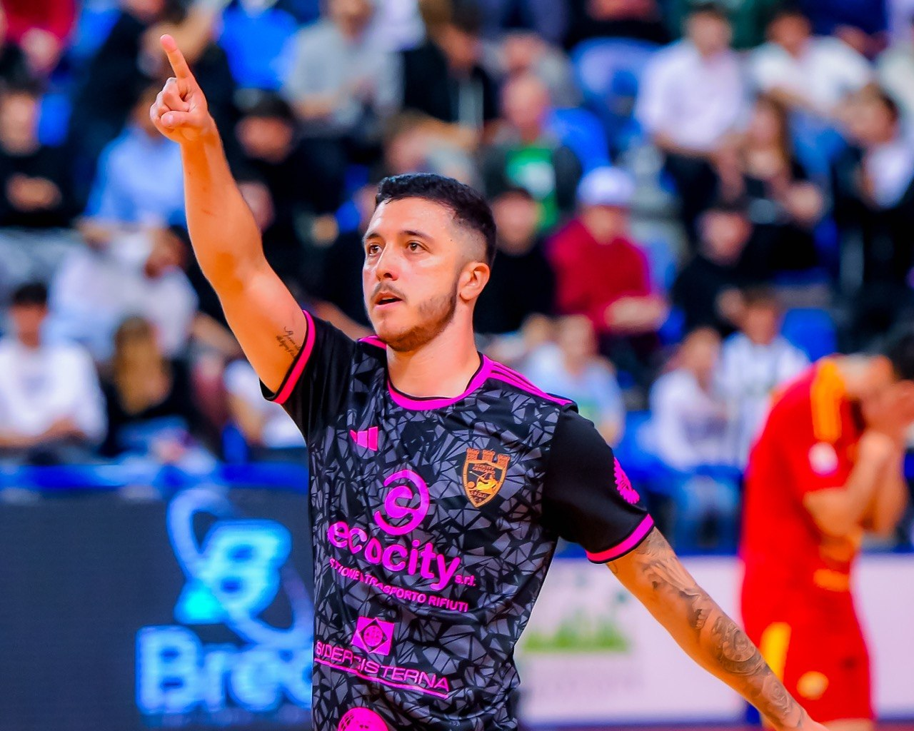
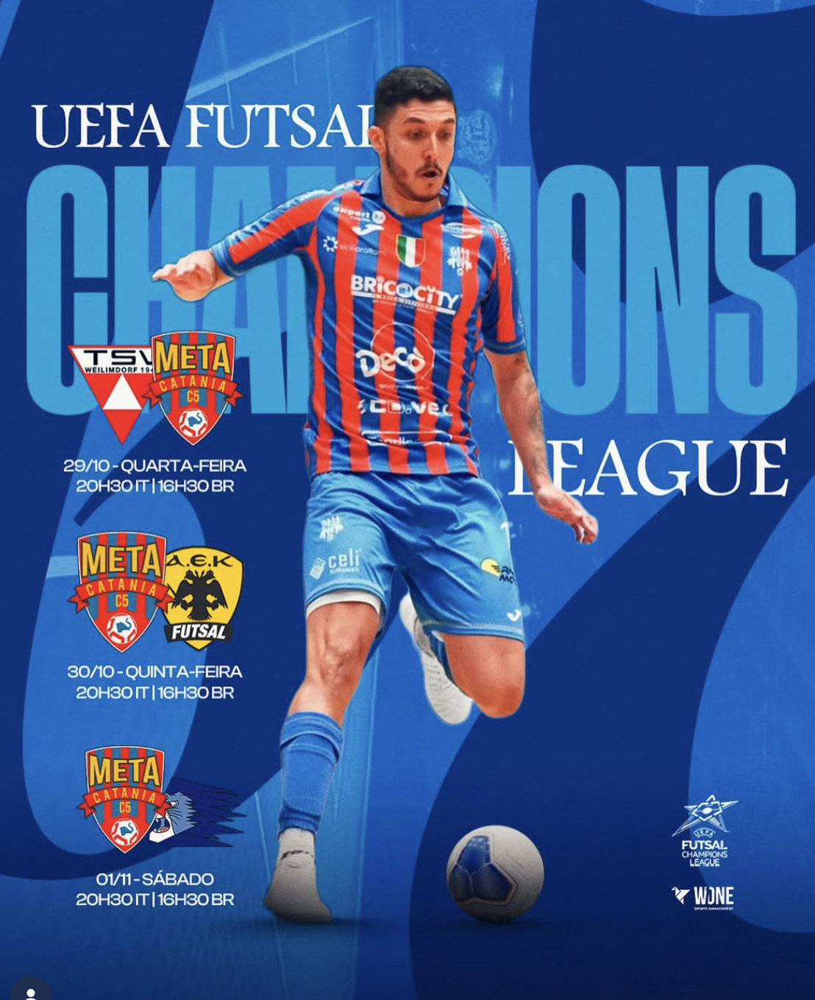
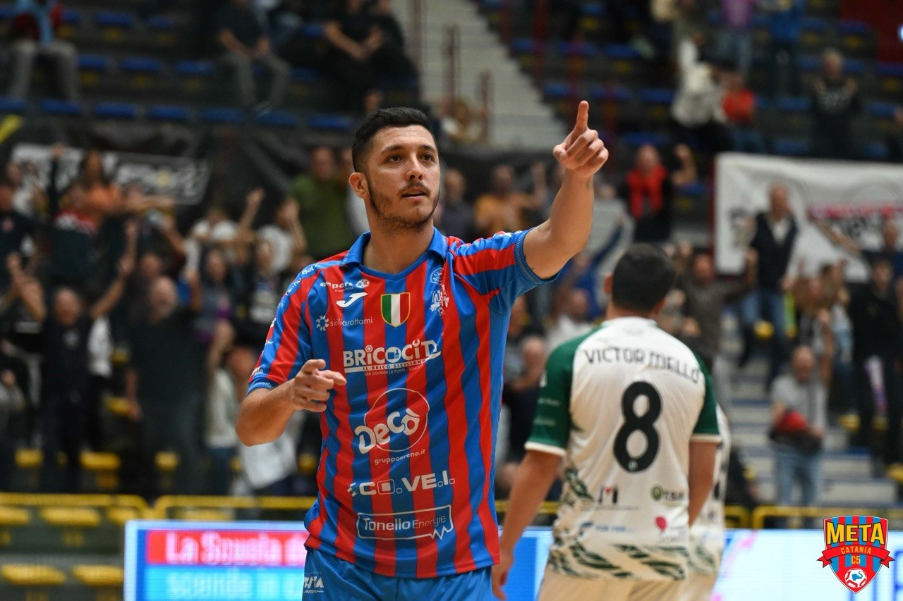

Pivot italo-brasiliano
Leonardo Brunelli
Nascido no Brasil, formado para competir na Itália: potência de pivô, leitura de jogo e presença decisiva no último terço da quadra.
28
anos
2024
Seleção Italiana de futsal
Meta Catania
campeão italiano
Genzano
retorno a Roma
Perfil do atleta
Um pivô de área, pressão e decisão.
Leonardo Brunelli une a intensidade do futsal brasileiro com a disciplina competitiva italiana. Atua como referência ofensiva, protege bem a bola, ataca espaços curtos e oferece solução constante para saídas sob pressão.
Proteção de bola
Finalização rápida
Jogo de costas
Pressão alta


Momento competitivo
Do Meta Catania campeão ao retorno para Genzano.
Após passagem pelo Meta Catania, atual campeão italiano, Brunelli retorna ao Ecocity Genzano, em Roma, levando experiência internacional, presença de seleção e histórico vencedor.
Números da temporada
Presença decisiva na Serie A italiana.
Highlights
Jogadas que mostram presença, decisão e leitura.
Um recorte visual das ações de Brunelli: ataque ao espaço, jogo de pivô, participação ofensiva e finalização em ritmo competitivo.
Reel institucional
Brunelli em ação
Sequência automática com os principais clipes, sem som, pronta para apresentação profissional.
Trajetória
Brasil, Itália e seleção.
Portuguesa Futsal
Primeiros anos de formação no Brasil.
Clube São João
Base competitiva e evolução técnica.
Magnus Futsal / Barueri Futsal
Passagem por projetos fortes do futsal paulista.
Futsal Giorgione
Chegada ao futsal italiano.
Sporting Sala Consilina
Consolidação no cenário italiano.
Ecocity Genzano
Temporada em Roma com protagonismo ofensivo.
Meta Catania
Passagem pelo clube campeão italiano.
Ecocity Genzano
Retorno ao clube de Roma.
Títulos e reconhecimento
Histórico de vitórias, evolução e seleção.
Campeão Copa Regional
Campeão Liga Paulista
Campeão Coppa Italia A2
Seleção Italiana de futsal
Artilheiro Copa Regional
Atleta revelação de Jundiaí

Representação
Agenciado pela WoneSports.
Para oportunidades esportivas, ativações e contato profissional, acesse a WoneSports ou acompanhe o atleta pelo Instagram.